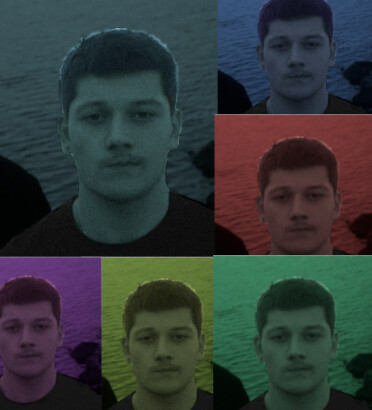
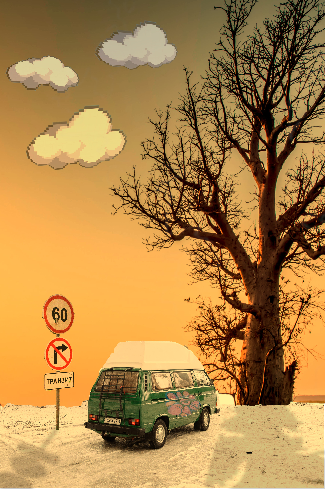

 
VJEŽBE(5-7)
5. VJEŽBA - retuširanje
Uređivanje i ispravljanje nepravilnosti.
6. VJEŽBA - koloriranje
Koloriziranje sa više boja.
7. VJEŽBA - fotomontaža
Dodavanje više slika i spajanje u jednu cijelinu sa promjenama boja i tonova.
1.VJEŽBA - FontForge
Pravljenje svog font.
2.VJEŽBA - Bezier
Bazierovom krivuljom radimo svoje inicijale.
3.VJEŽBA - swatch i reflektiranje
Definirali smo swatch i nacrtali smo cvijet pomoću rotacije.
4.VJEŽBA - objekti
Spajanjem objekata stvaramo svoj rad
Projektni zadatak na kojem smo pokazali što smo naučili do sad.
5. VJEŽBA - retuširanje
Uređivanje i ispravljanje nepravilnosti.
6. VJEŽBA - koloriranje
Koloriziranje sa više boja.
7. VJEŽBA - fotomontaža
Dodavanje više slika i spajanje u jednu cijelinu sa promjenama boja i tonova.
Projektni zadatak na kojem smo pokazali što smo naučili do sad.


8.VJEŽBA - montaža kinemagrafa
U videu smo odabrali jedan element koji će se normalno micati dok su ostali stopirani.
9.VJEŽBA - video montaža
Osnove uređivanja videa.
10./11.VJEŽBA - izrada web stranice u html i css jezicima
Osnove izrade web stranice.